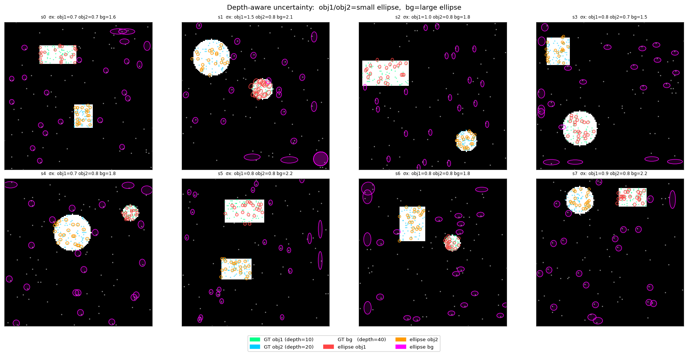
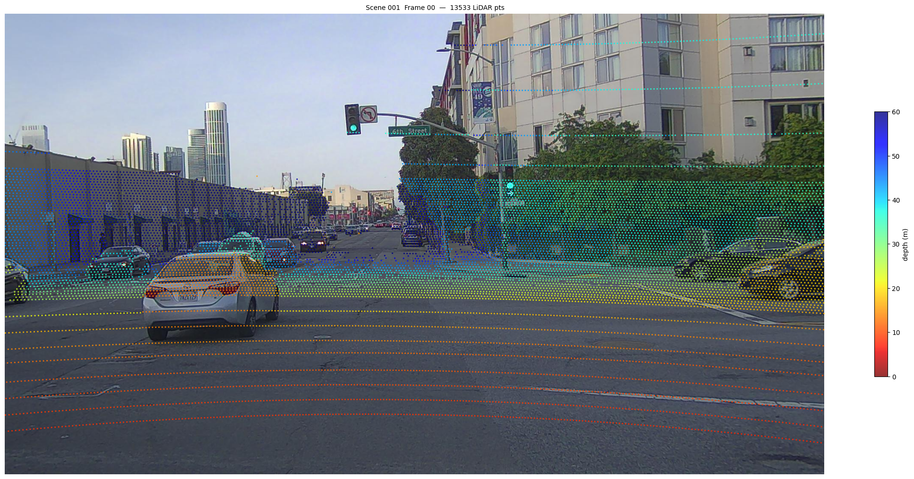
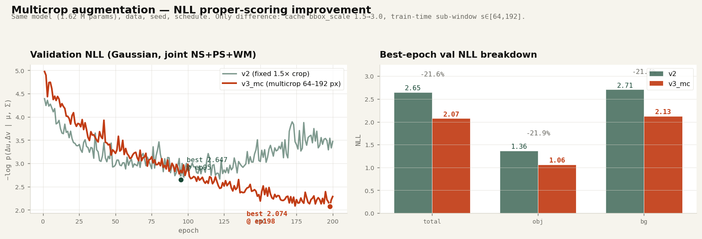
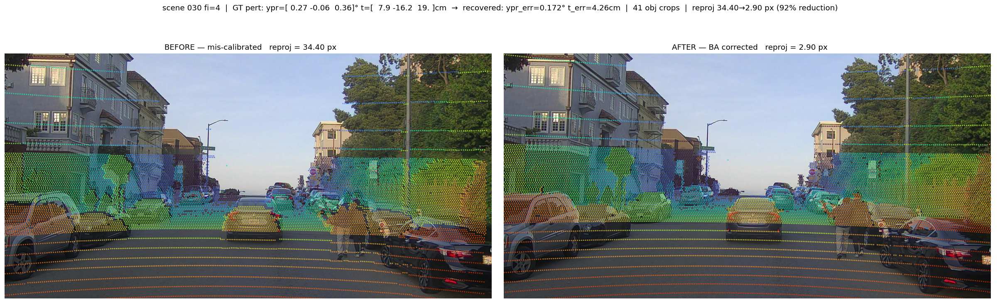

LiDAR–Camera Calibration
experiment summary.
LiDAR–カメラ
キャリブレーション 実験まとめ。
Cross-attention network predicts per-point 2-D Gaussian (μ, Σ) from an image crop and projected LiDAR points. Feed those into pyceres bundle adjustment — one 6-DoF extrinsic falls out per frame. This document summarises five experiments that took the model from synthetic POC to a real-data BA loop.
Cross-Attention ネットが画像クロップと投影 LiDAR 点から、点ごとの 2D ガウス分布 (μ, Σ) を返す。それを pyceres のバンドル調整に流すと、フレームごとに 6-DoF 外部パラメータが出る。本ドキュメントは、合成データの POC から実データの BA ループまで、5 つの実験をまとめる。
§ 00 Model § 00 モデル CalibNetDepth — one network, all experiments. CalibNetDepth — 全実験で共通のネット。
Input: an image crop (B, C, H, W) — 64 × 64 RGB by default — plus LiDAR points projected into it, carried as (u, v, depth). Output: for each point a 2-D Gaussian (Δu, Δv, log σ_u, log σ_v, ρ), i.e. a displacement mean and full covariance.
入力は画像クロップ (B, C, H, W)（既定 64 × 64 RGB）と、そこに投影された LiDAR 点を (u, v, depth) で持ったもの。出力は点ごとの 2D ガウス (Δu, Δv, log σ_u, log σ_v, ρ)、すなわち平均シフトと完全な共分散。
Loss is the Gaussian NLL of the observed residual against the predicted distribution. Because NLL is a proper scoring rule, training simultaneously pulls μ toward the true residual and σ toward the true spread — under-confident and over-confident predictions are both penalised.
損失は観測残差に対する予測分布の Gaussian NLL。NLL は proper scoring rule なので、学習中 μ は真の残差へ、σ は真の分布幅へ同時に引き寄せられる — 過信と過小評価の両方が罰される。
Variants used below:
本レポートで登場するバリアント：
model_depth.py·CalibNetDepth— 3-ch input(u, v, d), used in §1.model_depth.py·CalibNetDepth— 3 ch 入力(u, v, d)、§1 で使用。model_depth.pywith ConvNeXt backbone + frustum pooling — used in §2 / §3 / §4.model_depth.pyに ConvNeXt バックボーン + frustum pooling — §2 / §3 / §4 で使用。model_deform.py— same CNN, Cross-Attn replaced with MS-Deformable-Attn (§5).model_deform.py— CNN は同じ、Cross-Attn を MS-Deformable-Attn に置換（§5）。
§ 01 Synthetic POC § 01 合成データ POC GridDepthDataset — shape primitives at varying depth. GridDepthDataset — 深度の異なる幾何プリミティブ。
GridDepthDataset renders a synthetic RGB image with rectangles, circles, and poles at randomised depths, plus a background layer at the largest depth. A 6-DoF-style shift is applied per depth group so each group ends up with its own offset; the model has to disentangle them from a single image.
GridDepthDataset は矩形・円・ポールをランダムな深度で配置した合成 RGB 画像を返し、一番奥に背景レイヤを置く。深度グループごとに 6-DoF 風のシフトを与え、モデルは 1 枚の画像からそれを分離しないといけない。

v9_3layer_rgb_randdepth) on GridDepthDataset. Object points (close) get tight σ; background points (far) get larger σ — depth-conditioned uncertainty falls out for free.v9_3layer_rgb_randdepth) on GridDepthDataset。近距離（物体）は σ が小さく、遠距離（背景）は σ が大きい — 深度依存の不確実性が自動で出る。Best config was 2-layer cascade, cross-attention first, self-attention second. Trying self_first=True (self-attn before cross-attn) or a full TransformerDecoder (v10_3layer_tfdecoder) degraded obj NLL from 1.45 to 4.6 — the natural ordering is each point first queries the image at its own (u, v, d), and point-to-point self-attention only makes sense afterwards.
最良構成は 2 層 cascade、cross-attn 先行 + self-attn 後段。self_first=True（self-attn を先にする）や TransformerDecoder 構造（v10_3layer_tfdecoder）は obj NLL を 1.45 → 4.6 まで悪化させた — 自然な並びは「各点がまず自分の (u, v, d) で画像に問合せ、点どうしの通信はその後」。
§ 02 PandaSet § 02 PandaSet First real-data run — object-split val. 実データ初段 — 物体単位の val split。
Jumping from synthetic to PandaSet: 103 scenes, 33,458 object crops (car / truck / bus / pedestrian / bicycle), split object-level to keep the val set fully unseen. Perturbation σ_ypr = 0.5°, σ_t = 0.20 m — the distribution the BA solver will later see.
合成から実データへ。PandaSet 103 シーン・33,458 物体クロップ（car / truck / bus / pedestrian / bicycle）を物体単位で split し、val を完全未知に保つ。ずれ分布は σ_ypr = 0.5°, σ_t = 0.20 m — 後段の BA が見ることになる分布と同じ。

Mean per-object error 0.91 px — well under the native 4 px LiDAR beam spacing on PandaSet. Full writeup (architecture SVG, per-class breakdown, object-split protocol, 176 val visualisations): ps_v9_objsplit report.
物体平均誤差 0.91 px — PandaSet の LiDAR ビーム間隔 4 px を大きく下回る。構造 SVG・クラス別内訳・物体単位 split プロトコル・val サンプル 176 枚は：ps_v9_objsplit report。
§ 03 NuScenes + Waymo (joint) § 03 NuScenes + Waymo（合同学習） One model, three datasets. Plus multicrop augmentation. 1 モデルで 3 データセット。さらに multicrop augmentation。
Same architecture, but trained on the union of NuScenes + PandaSet + Waymo (60 k train / 1.5 k val, object-level shuffle). Baseline run all_v2. The follow-up all_v3_mc is identical except for crop augmentation: the 192 × 192 cache (bbox × 3.0) is sampled at a random sub-window side s ∈ [64, 192] per iteration and resized to 64 × 64.
構造は同じで、NuScenes + PandaSet + Waymo の結合データ（train 60 k / val 1.5 k、物体単位シャッフル）で学習。ベースライン all_v2。後続 all_v3_mc は crop augmentation のみ 差し替え：192 × 192 キャッシュ（bbox × 3.0）から s ∈ [64, 192] のランダム sub-window を毎イテレーション引いて 64 × 64 にリサイズ。

all_v2 (green) best at ep 95 then collapses; all_v3_mc (red) improves to ep 198 and stays stable. Right: best-epoch breakdown — total / obj / bg all drop ~21 %.all_v2（緑）は ep 95 で頭打ち → 崩壊。all_v3_mc（赤）は ep 198 まで改善し安定。右：best epoch 内訳 — total / obj / bg すべて約 21% 低下。| all_v2 | all_v3_mc | Δ | ||
|---|---|---|---|---|
| val NLL (total) | val NLL（合計） | 2.647 | 2.074 | −21.7 % |
| val NLL (obj) | val NLL（obj） | 1.363 | 1.064 | −21.9 % |
| val NLL (bg) | val NLL（bg） | 2.707 | 2.127 | −21.4 % |
| val mean px err | val 平均 px 誤差 | 4.03 | 4.39 | +9.0 % |
| best epoch | best epoch | 95 / 200 | 198 / 200 | — |
| train–val NLL gap @ best | train–val NLL ギャップ @ best | 0.594 | 0.129 | — |
Pixel error rises by 0.36 px while NLL drops 21.7 %. The only way those two numbers move together under a proper scoring rule is if σ became honestly calibrated — the baseline was emitting σ's too small for its μ. That calibration is what §04 feeds into the BA solver. Full report (all tables, per-dataset breakdown, multi-frame BA): all_v3_mc report.
ピクセル誤差は 0.36 px 増えるが NLL は 21.7 % 低下する。proper scoring rule の下で両者が同時にこう動く理由は一つしかない — σ の校正が正直になった（ベースラインは μ に対して σ が小さすぎた）。この校正がそのまま §04 の BA ソルバに効く。全表・データセット別内訳・マルチフレーム BA は：all_v3_mc report。
§ 04 Single-frame bundle adjustment § 04 単フレーム バンドル調整 pyceres + per-point Σ — one frame, one 6-DoF fix. pyceres + 点ごとの Σ — 1 フレームから 6-DoF を 1 本。
The detector outputs per-point Gaussians (μ, Σ), which are weighted 2-D observations — exactly what a bundle adjuster consumes. ba_singleframe.py:
検出器の出力 (μ, Σ) は重み付き 2D 観測 — バンドル調整が扱う通貨そのもの。ba_singleframe.py：
- Group all object instances in a frame under one shared 6-DoF block.
- フレーム内の全物体インスタンスを、共有 6-DoF ブロック 1 つでまとめる。
- Sample a training-distribution drift
(σ_ypr = 0.5°, σ_t = 0.20 m). - 学習分布の 6-DoF ずれ
(σ_ypr = 0.5°, σ_t = 0.20 m)をサンプル。 - Run detector on every crop → collect
(μ, Σ)for ~8 k points over ~40 objects. - 全クロップに検出器をかけ、約 40 物体・約 8 k 点の
(μ, Σ)を集める。 - Build
pyceres.CostFunctionwith 2N residuals, one 6-param block, weighted byΣ⁻¹. pyceres.CostFunctionを 2N 残差・6 パラメータ 1 ブロック・Σ⁻¹重みで構築。- Solve. Compose delta into current extrinsic. Re-run detector. Iterate 3 ×.
- 解く → Δ を現外部に合成 → 検出器を再実行。3 反復。

10-frame batch with the all_v3_mc checkpoint from §03: median reprojection 2.04 px, median rotation 0.11°, 10 / 10 frames under 10 px (up from 7 / 10 with the baseline all_v2 ckpt). Multi-frame joint BA on 10 frames sharing one extrinsic collapses median reprojection further to 0.75 px. Full writeup: ba_singleframe report, 10-frame batch and multi-frame: all_v3_mc §07 / §09.
§03 の all_v3_mc チェックポイントでの 10 フレーム batch：中央値 再投影 2.04 px、回転 0.11°、10 / 10 フレームが 10 px 未満（ベースライン all_v2 では 7 / 10）。10 フレームで外部パラメータを共有するマルチフレーム BA は中央値再投影を 0.75 px までさらに圧縮する。詳細：ba_singleframe report、10 フレーム batch とマルチフレームは all_v3_mc §07 / §09。
§ 05 MS-Deformable-Attn, bf16 § 05 MS-Deformable-Attn の bf16 化 Cross-Attn → deformable sampling. CUDA kernel extended. Cross-Attn を deformable sampling に置換。CUDA カーネルを拡張。
model_deform.py replaces the dense Cross-Attn with DINO's Multi-Scale Deformable Attention: each query samples a small set of learned image locations instead of attending to the full feature map. Two variants:
model_deform.py は密な Cross-Attn を DINO の Multi-Scale Deformable Attention に置換。各クエリが全特徴マップに attend せず、学習済みのサンプル点に直接アクセスする。バリアント 2 つ：
- Single-Level (SL) — sample from
fine_featonly. - Single-Level (SL) —
fine_featのみからサンプル。 - Multi-Level (ML) — sample from
coarse_feat+fine_featwith level embedding. - Multi-Level (ML) —
coarse_feat+fine_featから level embedding 付きでサンプル。
DINO's upstream CUDA kernel was fp32-only. To run it under bf16 autocast we patched ops/src/cuda/ms_deform_attn_cuda.cu and ms_deform_im2col_cuda.cuh:
DINO の本家 CUDA カーネルは fp32 固定だった。bf16 autocast 下で動かすため、ops/src/cuda/ms_deform_attn_cuda.cu と ms_deform_im2col_cuda.cuh にパッチ：
AT_DISPATCH_FLOATING_TYPES → AT_DISPATCH_FLOATING_TYPES_AND2(Half, BFloat16, ...) atomicAdd → gpuAtomicAdd (ATen/cuda/Atomic.cuh, bf16/fp16 対応)

| fp32 (pre-patch) | fp32（パッチ前） | bf16 (post-patch) | bf16（パッチ後） | Δ | |
|---|---|---|---|---|---|
| Single-Level, fwd (ms) | Single-Level, 順伝播 (ms) | 27.7 | 19.3 | −30 % | |
| Multi-Level, fwd (ms) | Multi-Level, 順伝播 (ms) | 35.1 | 22.0 | −37 % | |
| numerical parity (max err) | 数値パリティ (max err) | 0.039 — bf16 本来の精度の範囲内 | — | ||
Hardware: RTX 5090 (SM 12.0), PyTorch 2.10, CUDA 12.8. bf16 SL now matches the Flash-Attn Cross-Attn baseline speed (19.5 ms). Committed as 85b6ccc.
環境：RTX 5090（SM 12.0）、PyTorch 2.10、CUDA 12.8。bf16 SL は Flash-Attn Cross-Attn ベースライン（19.5 ms）と同等速度。commit 85b6ccc。
§ 06 Files § 06 ファイル Where each experiment's artefacts live. 実験ごとの成果物の場所。
| § | experiment / script | 実験 / スクリプト | report | レポート |
|---|---|---|---|---|
| 01 | experiments/v9_3layer_rgb_randdepth/ | — | ||
| 02 | experiments/ps_v9_objsplit/ |
ps_v9_objsplit | ||
| 03 | experiments/all_v3_mc/ · experiments/all_v2/ |
all_v3_mc | ||
| 04 | ba_singleframe.py · experiments/ba_singleframe/ |
ba_singleframe | ||
| 05 | model_deform.py · ops/src/cuda/ | — |